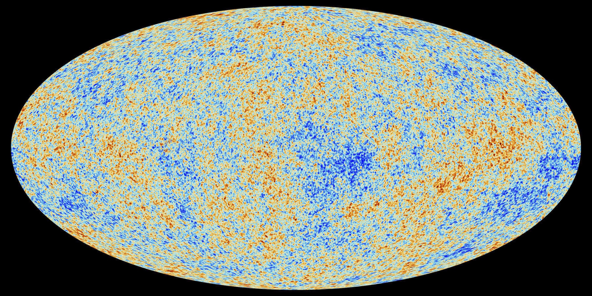
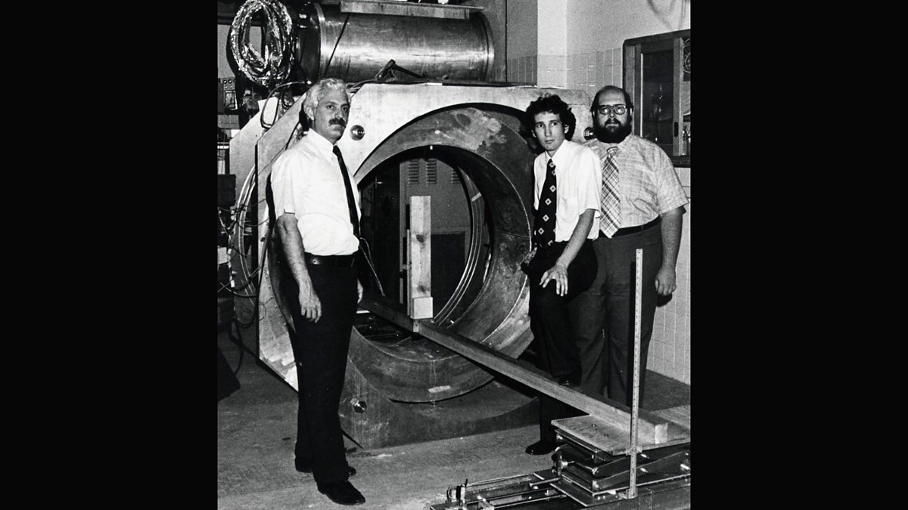

Pigments & the Rainbow
Egyptian artisans
c. 1500 BCE
Egyptian glassmakers produced coloured pigments and treated the rainbow as a phenomenon worthy of record — humanity's earliest engagement with the decomposition of colour.[1]
A scrolling history of how humanity learned to read light.
scroll ↓
Egyptian artisans
Thales of Miletus
Mo Zi & the Mohists
Cleomedes
Claudius Ptolemy
Roger Bacon
Isaac Newton
William Hyde Wollaston
Joseph von Fraunhofer
Kirchhoff & Bunsen
Johann Balmer
See Rydberg Formula
Johannes Rydberg
See Balmer Formula · Quantised Atom
Niels Bohr
Pieter Zeeman
See Stark Effect · Quantised Atom
Johannes Stark
See Zeeman Effect · Quantised Atom
C. V. Raman
Ruska & Knoll
Hillier & Baker
Willis Lamb & Robert Retherford
See Quantised Atom · Stark Effect
Bloch & Purcell
Theodor Förster
Woodbury & Ng
See Raman Scattering
Hänsch & Hall
Schmidt, Rosenband, Wineland
Runge & Gross
Brumer & Shapiro; Tannor & Rice
Corkum; Lewenstein
See Coherent Control
O'Keefe & Deacon
Nie & Emory; Kneipp et al.
Cornell, Wieman, Ketterle
ALPHA Collaboration
Janssen & Lockyer
Cecilia Payne
Edwin Hubble
Penzias & Wilson

Lauterbur & Mansfield

Vera Rubin
Kurt Wüthrich
HST & Spitzer teams
LIGO Collaboration
NIST, JILA, RIKEN